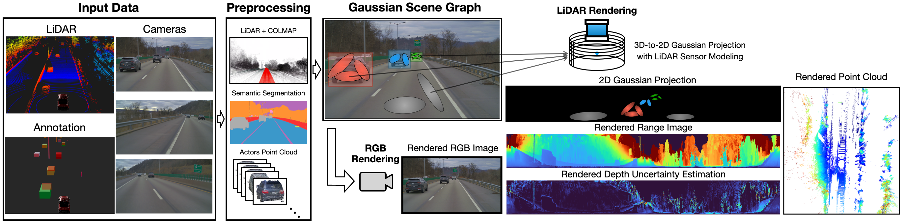
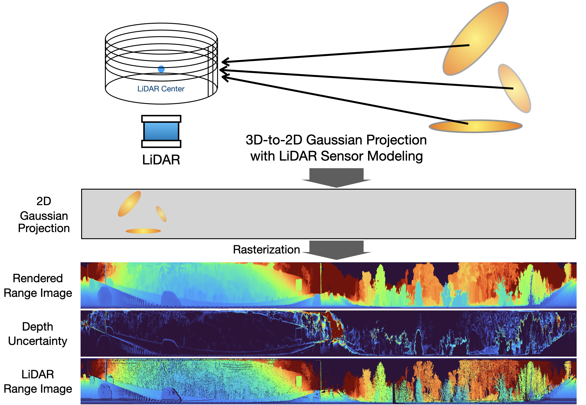
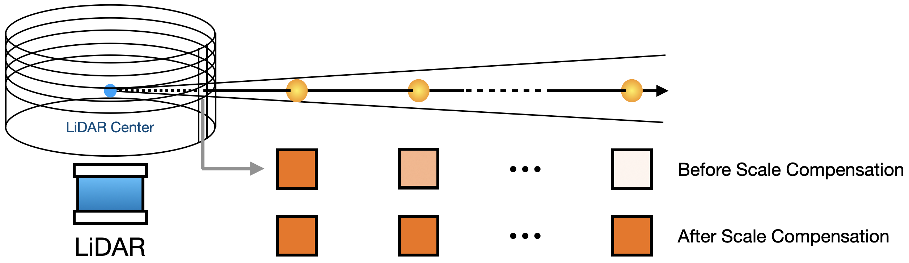
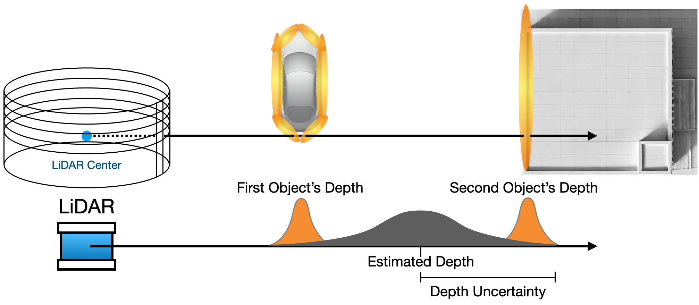
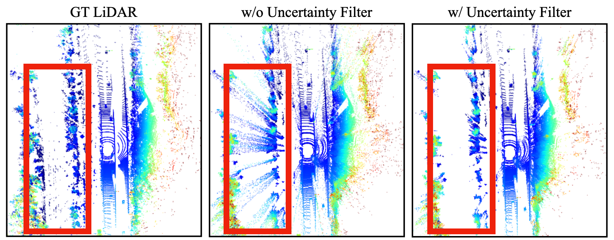
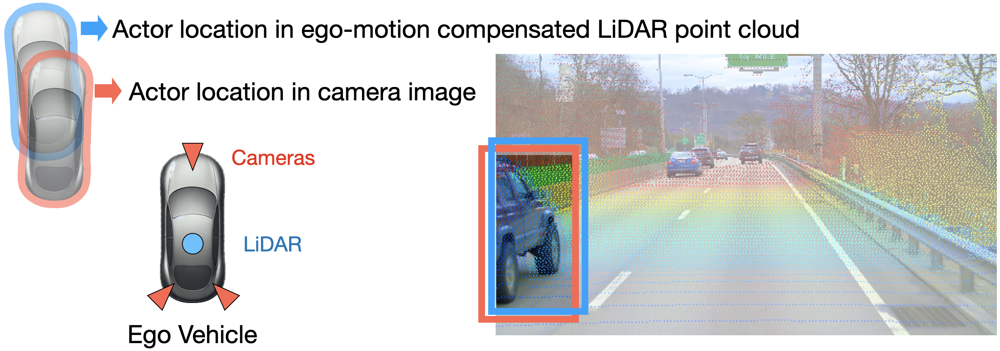

LiHi-GS 🚀
LiDAR-Supervised Gaussian Splatting for Highway Driving Scene
Reconstruction

LiHi-GS provides higher quality color and depth renderings for interpolated novel views and for ego/actor shifts compared to state-of-the-art NeRF (NeuRAD) and GS-based (StreetGS) methods. LiHi-GS does particularly well on actor shifts at longer-ranges (205 meters)
Abstract
TL;DR: We introduce LiHi-GS, a novel LiDAR-supervised Gaussian Splatting method with LiDAR sensor modeling evaluated in challenging high-speed, featureless highway scenarios.
Photorealistic 3D scene reconstruction plays an important role in autonomous driving, enabling the generation of novel data from existing datasets to simulate safety-critical scenarios and expand training data without additional acquisition costs. Gaussian Splatting (GS) facilitates real-time, photorealistic rendering with an explicit 3D Gaussian representation of the scene, providing faster processing and more intuitive scene editing than the implicit Neural Radiance Fields (NeRFs). While extensive GS research has yielded promising advancements in autonomous driving applications, they overlook two critical aspects: First, existing methods mainly focus on low-speed and feature-rich urban scenes and ignore the fact that highway scenarios play a significant role in autonomous driving. Second, while LiDARs are commonplace in autonomous driving platforms, existing methods learn primarily from images and use LiDAR only for initial estimates or without precise sensor modeling, thus missing out on leveraging the rich depth information LiDAR offers and limiting the ability to synthesize LiDAR data. In this paper, we propose a novel GS method for dynamic scene synthesis and editing with improved scene reconstruction through LiDAR supervision and support for LiDAR rendering. Unlike prior works that are tested mostly on urban datasets, to the best of our knowledge, we are the first to focus on the more challenging and highly relevant highway scenes for autonomous driving, with sparse sensor views and monotone backgrounds.
Overview

System overview. LiHi-GS takes multiple cameras, LiDAR, and annotated 3D poses as input. In the preprocessing step, a LiDAR map combined with a COLMAP sparse point cloud is used for static scene initialization, while aggregated LiDAR points are used for dynamic object initialization. Our method enables LiDAR supervision during training and supports rendering both images and LiDAR.
Highway Scene Reconstruction
Ours vs StreetGS (Gaussian Splatting w/o Lidar Supervision)
Ours vs NeuRAD (NeRF w/ Lidar Supervision)
RGB Rendering Comparisons
Depth Rendering Comparisons
Scene Decomposition Comparisons
Actors Editing Comparisons
Gaussian Splatting LiDAR Modeling

2D Scale Compensation

2D Gaussian scale compensation is aimed at avoiding small Gaussians that are lost during projection when rendering LiDAR range images
Depth Uncertainty Rendering

LiDAR depth uncertainty rendering helps compensate for noisy artifacts around object edges.

Depth uncertainty filter removes floating artifacts from rendered point cloud
Camera-LiDAR Actor Alignment with Decoupled Pose Optimization

Camera-LiDAR misalignment for highway actors. To solve this issue we propose to decouple camera and LiDAR bounding box for pose optimization.